ABC’s of How to Shape the Perfect Bar
 I enjoy making healthy, whole food bars. But often they can be hard to shape into a nice compact bar.
I enjoy making healthy, whole food bars. But often they can be hard to shape into a nice compact bar.
After experimenting with several techniques, I came across one that I now use regularly. I have talked about using this bar press (the actual name for it is the “spam musubi sushi rice press) in several of my posts, but I thought I would take some time to show you how wonderful of a tool it is.
The Perfect Bar
So to make the bars, I used three tools; the bar press, a pastry scraper, and a 1/4 cup measuring scoop. With these three tools, I can create compact bars that are all the same size. Often, bar batters can be loose and hard to make compact… this simple mold will help you make pressed bars the foolproof way. I hope the step-by-step pictorial helps.
Items Needed:
- Sushi Rice Press (bar press)
- Pastry Scraper
- 1/4 cup measuring cup/scoop
Gather the supplies…
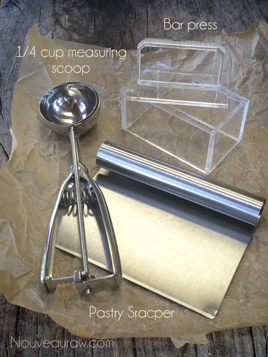
Prepare the bar dough/batter.
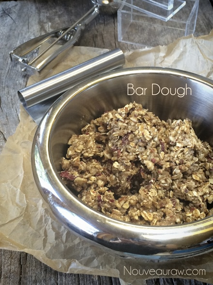
Place the bar press on a hard surface. I usually do this on the teflex sheet
that comes with the dehydrator. You can also use a cutting board.
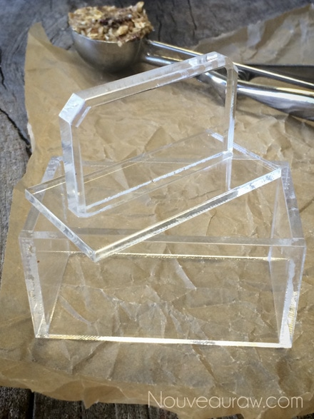
Load the measuring scoop with batter. Level off the surface each time.
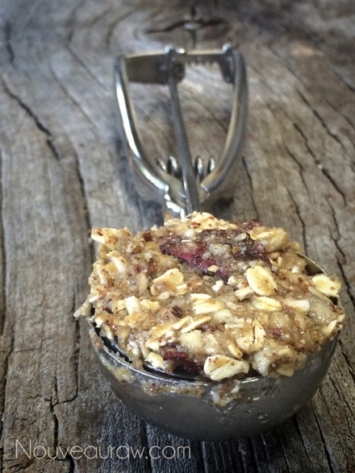
Place the dough in the bar press and insert the top piece.
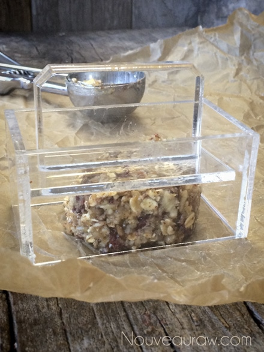
With even, steady pressure, push the insert down, flattening the dough.
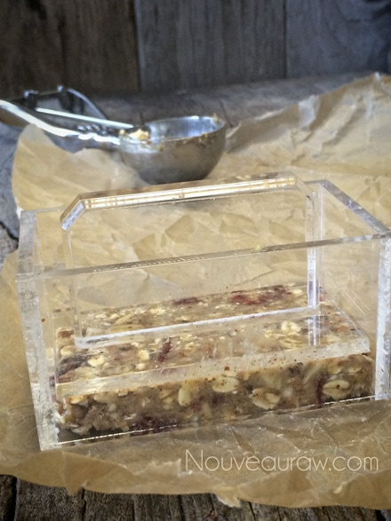
Lift the bar press casing off. DO NOT LIFT THE HANDLE OUT FIRST.
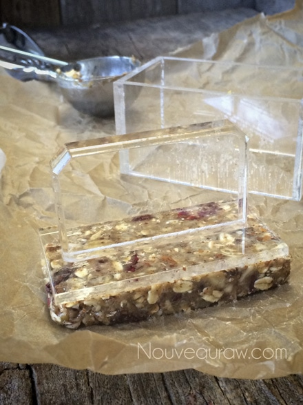
Slide the pastry scraper under the bar, removing it from the surface.
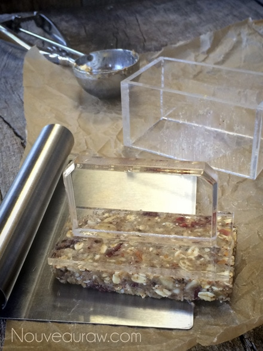
The bar is now stuck to the bottom of the bar press handle.
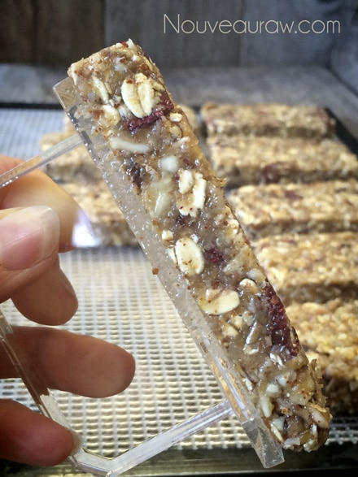
Slide the pastry scraper in between the handle and the bar.
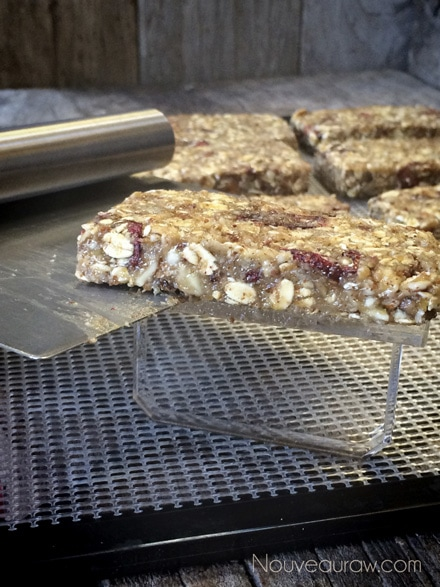
The bar then transfers to the scraper.
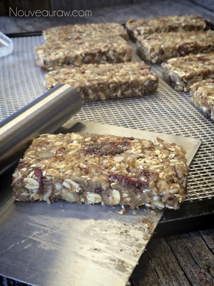
Slide off the bar onto the mesh sheet that comes with the dehydrator.
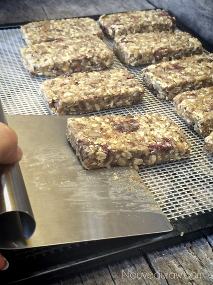
Wah-lah! It may seem time-consuming, but trust me,
soon you will have a rhythm, and then it goes quickly.
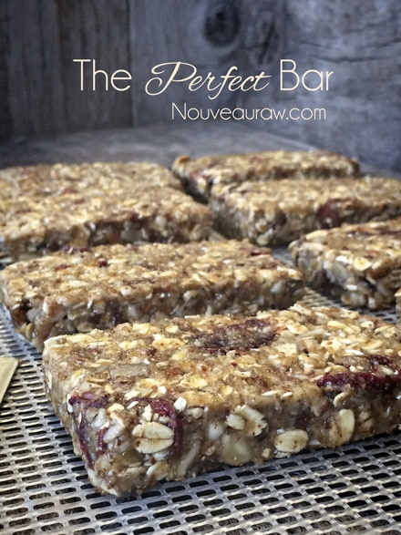
© AmieSue.com